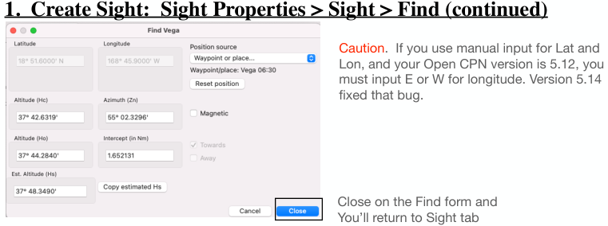

| Previous | Contents | Next |
Altitude sights and coastal navigation · Page 10 of 66
Use Case 1 SW of Hawaii UTC 16 Jul 2025
 |
| Open illustration at full size |
1. Create Sight: Sight Properties > Sight > Find (continued)
FIND. When button is pressed, the sight input data is "reduced" using the Law of Cosines after you’ve changed DR Latitude & Longitude Computed Altitude (Hc) the altitude the celestial body should have per Almanac data (calculate form) and the DR Lat/Lon location is roughly right. Azimuth (Zn), is the bearing (True or Magnetic) to the body. The Magnetic uses the WMM World Magnetic Model Altitude Observed Ho Altitude after adjustments are made for IC, Dip, Refraction, Parallax, Temp/Pressure, etc. It is apples to apples to the Computed Altitude (Hc). Intercept, the distance (in nautical miles) from the vessel's DR position towards (Ho > Hc) or away (Ho < Hc) from the body's LOP. Estimated Altitude (Hs) new feature v 2.4.66. An estimate for the sextant sight (Hs). Use the estimate to pre-set Sextant before taking sights. After preset, the body should be just about there against the visible horizon. Very useful for high altitude sights which are difficult to bring down to the horizon by moving index arm/rotating micrometer while observing the body and horizon. Copy Estimated Hs new feature v 2.4.66. Copies the Estimated Hs into the Hs Measurement field. Useful for Backyard Lunars.
Press “Close” to just close the Find form. You are Returned to “Sight Properties>Sight” tab…Sight not saved yet.
| Previous | Contents | Next |